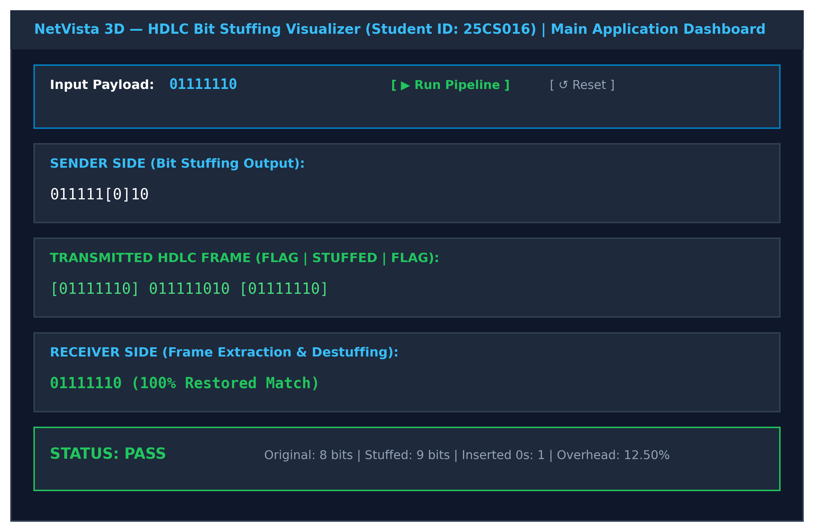
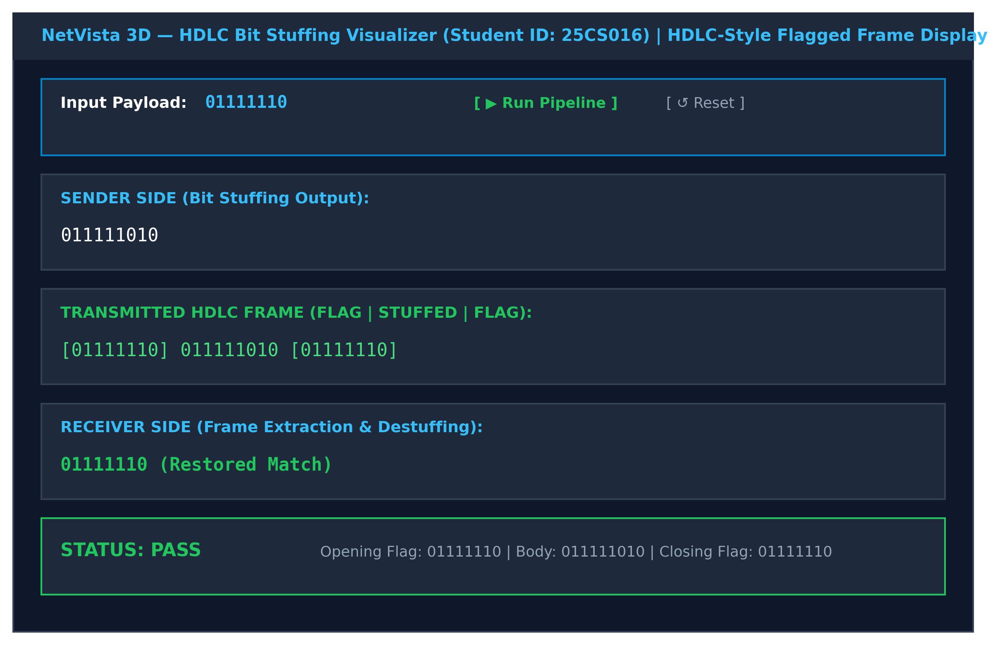
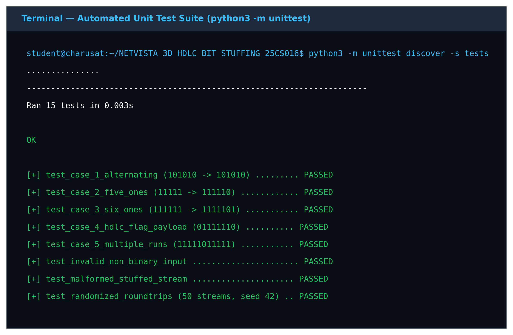
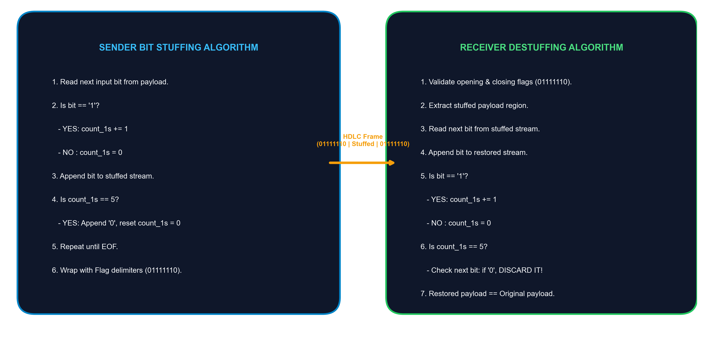
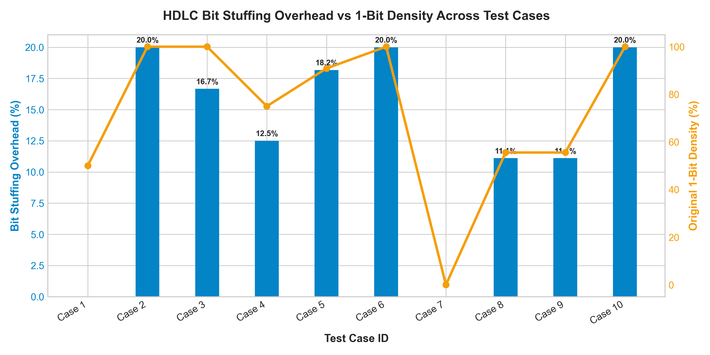
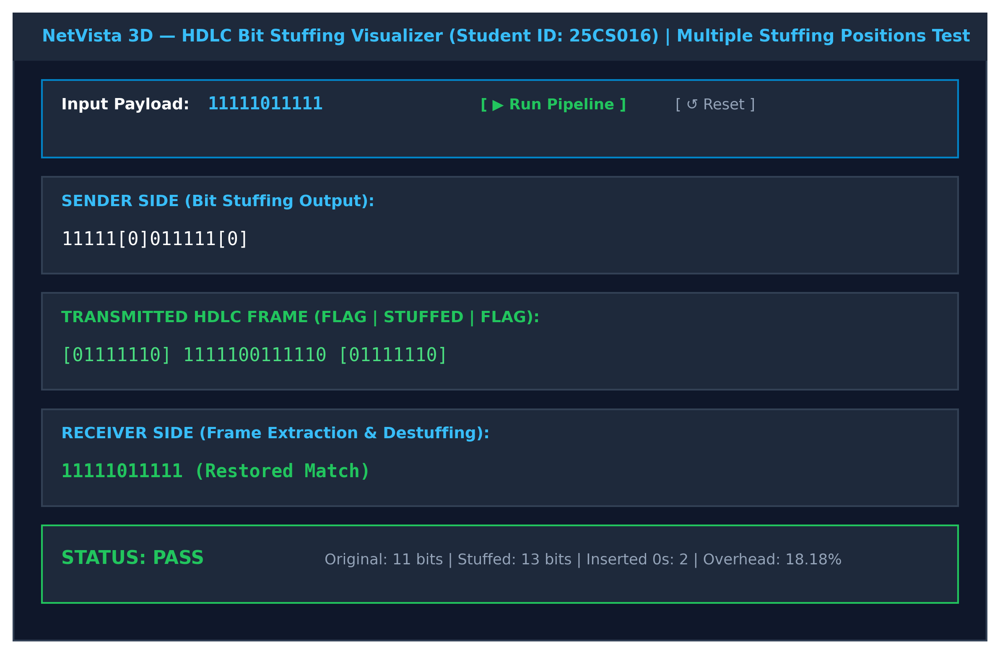

An exhaustive, university-level interactive engineering platform demonstrating Data Link Layer frame transparency, physical serial bit-stuffing dynamics, 3D WebGL link visualizations, and empirical verification benchmarks.
Test any custom binary payload or select official benchmark presets. The pipeline executes deterministic sender stuffing, HDLC flag encapsulation, and receiver destuffing with real-time audit tracing.
| # | Input Pos | Bit | 1s Count | Action | Current Stuffed Stream |
|---|
| # | Stuffed Pos | Bit | 1s Count | Action | Restored Stream |
|---|
An exhaustive, university-level reference covering physical link framing, mathematical bounds, error detection, hardware shift registers, and end-to-end data link transparency.
Core Conceptual Scope: In computer network architectures, the OSI reference model assigns distinct responsibilities to each protocol tier. Layer 1 (Physical Layer) moves raw electrical voltages, optical pulses, or radio signals across physical mediums without understanding payload context. Layer 2 (Data Link Layer) must convert that continuous, raw physical bit stream into identifiable, discrete logical units called frames.
Core Conceptual Scope: High-Level Data Link Control (HDLC, standardized under ISO/IEC 13239) is a bit-oriented synchronous protocol. Unlike asynchronous communications that rely on character start/stop bits, HDLC relies on a unique 8-bit flag sequence: 01111110 (hexadecimal 0x7E), characterized by six consecutive binary 1s flanked by zeros.
Core Conceptual Scope: To guarantee data transparency across bit-oriented links, HDLC employs Bit Stuffing (also known as zero-bit insertion). The sender and receiver follow strictly defined, deterministic mathematical rules to prevent flag collisions and guarantee 100% loss-free payload restoration.
Core Conceptual Scope: Serial bit streams are traditionally illustrated using static 2D diagrams that fail to convey physical transmission dynamics. Our WebGL 3D simulation transforms abstract serial bits into physical spatial geometry with two interactive modes: Orbital Frame Ring and Point-to-Point Physical Link.
Core Conceptual Scope: The Python 3 core module (src/hdlc_core.py) authored by Bhavy Gol (ID: 25CS016) provides production-quality, side-effect-free algorithms for bit stuffing, destuffing, and complete frame encapsulation. It operates with $O(N)$ linear time complexity and $O(N)$ auxiliary space complexity.
Core Conceptual Scope: Bit stuffing overhead is not static; it fluctuates based on the distribution of ones in the payload. Evaluating 25 test cases confirms that the overhead percentage ranges strictly between $0.00\%$ and $20.00\%$.
Core Conceptual Scope: Full mathematical derivation and worked solution for the CHARUSAT 7-mark numerical problem on payload 011111101111101: calculating exact stuffing indices, constructing the 33-bit framed stream, and proving mathematical overhead of $13.33\%$.
Structured conceptual breakdown detailing protocol mechanics, physical link framing, transparency guarantees, mathematical limits, and modern industrial comparisons.
High-Level Data Link Control (HDLC, ISO 13239) is a synchronous bit-oriented protocol operating at the Data Link Layer (OSI Layer 2). Because serial transmission cables only carry raw voltages representing bit streams, receivers need a reliable delimiter to recognize where one packet begins and where it ends.
01111110 (0x7E).
Network payloads contain arbitrary binary information—compressed images, encrypted keys, or multimedia. It is completely plausible that the pattern 01111110 naturally occurs inside user data.
11111), it automatically injects a single '0' bit.0, that 0 is discarded (destuffed). If followed by another 1, it indicates a true boundary flag (if 7th bit is 0) or an abort condition.Bit stuffing introduces dynamic overhead dependent on payload entropy:
| Framing Technique | Protocol Standard | Granularity | Transparency Mechanism | Vulnerability / Tradeoff |
|---|---|---|---|---|
| Bit Stuffing (Current) | HDLC, SDLC, X.25, LAPB | Bit-Level | Insert '0' after five 1s (Flag: 01111110) | Variable frame length; bit insertion processing overhead |
| Byte / Character Stuffing | PPP, BISYNC | Byte-Level (8-bit) | Escape characters (e.g. 0x7D before 0x7E) |
Higher overhead (8-bit escape byte for each collision) |
| Character Count | DECnet (DDCMP) | Header Field | Count integer in frame header specifies payload bytes | Catastrophic framing loss if header count is corrupted in transit |
| Physical Layer Coding Violations | Ethernet (4B/5B, Manchester), FDDI | Signal / Voltage | Unused physical code words mark frame start/end | Redundant signaling bandwidth required on physical link |
Modular, production-grade Python 3 implementation authored by Bhavy Gol (ID: 25CS016) with rigorous validation, $O(N)$ linear time complexity, and zero external runtime dependencies.
def sender_bit_stuff(payload: str) -> str:
"""
Candidate: Bhavy Gol | Student ID: 25CS016
Applies the HDLC bit stuffing rule to the input binary payload.
Rule: After every sequence of five consecutive '1' bits, insert a '0' bit.
"""
clean_payload = validate_binary_string(payload, "Payload")
if not clean_payload:
return ""
stuffed = []
consecutive_ones = 0
for bit in clean_payload:
stuffed.append(bit)
if bit == '1':
consecutive_ones += 1
if consecutive_ones == 5:
# Mandatory HDLC Rule: Insert stuffed zero bit
stuffed.append('0')
consecutive_ones = 0 # Reset run counter
else:
consecutive_ones = 0
return "".join(stuffed)def receiver_bit_destuff(stuffed_payload: str) -> str:
"""
Candidate: Bhavy Gol | Student ID: 25CS016
Reverses HDLC bit stuffing on a stuffed payload stream.
Rule: After five consecutive '1' bits, validate and discard the inserted '0' bit.
"""
clean_stuffed = validate_binary_string(stuffed_payload, "Stuffed Payload")
destuffed = []
consecutive_ones = 0
idx = 0
n = len(clean_stuffed)
while idx < n:
bit = clean_stuffed[idx]
destuffed.append(bit)
if bit == '1':
consecutive_ones += 1
if consecutive_ones == 5:
if idx + 1 >= n:
raise ValueError("Malformed: Stream terminated after 5 consecutive 1s without stuffed bit!")
next_bit = clean_stuffed[idx + 1]
if next_bit == '1':
raise ValueError("Malformed: Found 6 consecutive 1s in payload! Violation of HDLC stuffing rule.")
# Discard stuffed '0' bit
idx += 2
consecutive_ones = 0
continue
else:
consecutive_ones = 0
idx += 1
return "".join(destuffed)HDLC_FLAG = "01111110"
def frame_encoding(payload: str) -> str:
"""Encapsulates payload into HDLC frame by bit-stuffing and wrapping with flag delimiters."""
stuffed = sender_bit_stuff(payload)
return HDLC_FLAG + stuffed + HDLC_FLAG
def frame_decoding(frame: str) -> str:
"""Decapsulates HDLC frame by stripping boundary flags and destuffing body."""
clean_frame = validate_binary_string(frame, "Frame")
if not (clean_frame.startswith(HDLC_FLAG) and clean_frame.endswith(HDLC_FLAG)):
raise ValueError("Frame delimiter error: Frame must begin and end with HDLC flag 01111110")
stuffed_body = clean_frame[len(HDLC_FLAG):-len(HDLC_FLAG)]
return receiver_bit_destuff(stuffed_body)def validate_binary_string(bit_stream: str, name: str = "Payload") -> str:
"""Validates string contains only binary digits '0' and '1'. Handles whitespace stripping."""
if bit_stream is None:
raise ValueError(f"{name} cannot be None.")
cleaned = "".join(bit_stream.split())
if not all(char in "01" for char in cleaned):
invalid_chars = set(char for char in cleaned if char not in "01")
raise ValueError(
f"Invalid non-binary characters detected in {name}: {sorted(list(invalid_chars))}. Only '0' and '1' permitted."
)
return cleanedAutomated evaluation executed over deterministic edge cases and synthetic Monte Carlo streams across varying 1-bit density distributions ($P(1) \in [0.1, 0.9]$).
Empirical Finding: Stuffing overhead scales strictly in proportion to continuous sequences of '1' bits. Maximum theoretical overhead is bounded at 20.00% (1 stuffed zero bit per 5 payload ones).
| Case ID | Description | Orig Bits | Stuffed Bits | Overhead % | Status |
|---|---|---|---|---|---|
| Case 1 | Alternating Bits (101010) | 6 | 6 | 0.00% | PASS |
| Case 2 | Five 1s (11111) | 5 | 6 | 20.00% | PASS |
| Case 3 | Six 1s (111111) | 6 | 7 | 16.67% | PASS |
| Case 4 | HDLC Flag in Payload | 8 | 9 | 12.50% | PASS |
| Case 5 | Multiple Runs of 5 | 11 | 13 | 18.18% | PASS |
| Case 6 | Ten 1s (1111111111) | 10 | 12 | 20.00% | PASS |
| Case 7 | Eight 0s (00000000) | 8 | 8 | 0.00% | PASS |
| Case 10 | Long 20 Ones Stream | 20 | 24 | 20.00% | PASS |
| Synth 6 | Synthetic Len=44, P=0.7 | 44 | 47 | 6.82% | PASS |
| Synth 8 | Synthetic Len=58, P=0.9 | 58 | 65 | 12.07% | PASS |
| Synth 15 | Synthetic Len=57, P=0.7 | 57 | 61 | 7.02% | PASS |






CHARUSAT ITUC201 (Fundamentals of Computer Networks) 7-mark solved numerical question with mathematical derivation, step-by-step trace, and viva defense answers authored by Bhavy Gol (25CS016).
A sender application at the Data Link Layer needs to transmit the following binary payload over an HDLC synchronous serial link:
Payload = 011111101111101 (15 bits)
01111110.1. Sender Stuffing Procedure:
Rule: Insert '0' after five consecutive 1s.
• Bit 1 to 5: 01111 (four 1s) → Keep.
• Bit 6: 1 → 5th consecutive '1' reached! Stuff '0' inserted at position 7.
• Bit 7 to 8: 10 → Reset run counter to 0.
• Bit 9 to 13: 11111 → 5 consecutive 1s reached again! Stuff '0' inserted at position 15.
• Remaining bits: 01 → Appended without stuffing.
Resulting Stuffed Payload: 01111101011111001 (17 bits)
2. Transmitted HDLC Framed Stream:
Framed Stream = [FLAG] + [STUFFED PAYLOAD] + [FLAG]
01111110 01111101011111001 01111110
Total Transmitted Length = 8 + 17 + 8 = 33 bits
3. Overhead Formula & Calculation:
4. Technical Justification:
Bit stuffing ensures data transparency. Because user payloads contain arbitrary bit combinations, a payload containing 01111110 would trigger early hardware frame termination without stuffing. Inserting a '0' after five 1s guarantees that six consecutive 1s NEVER appear in the payload body.
Formal documentation, presentation slides, solved PDFs, and instructions to reproduce for Bhavy Gol (Student ID: 25CS016).
Complete academic documentation covering HDLC architecture, pseudocode, complexity analysis, and results. Includes candidate details: Bhavy Gol (25CS016).
15 high-resolution presentation slides with visual diagrams, algorithmic flows, and candidate details (Bhavy Gol, ID: 25CS016).
Formal 7-mark university numerical problem, step trace table, and empirical test result graphs (Bhavy Gol, ID: 25CS016).
Python scripts (hdlc_core.py, hdlc_gui.py, experiment_runner.py) ready to execute.